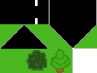
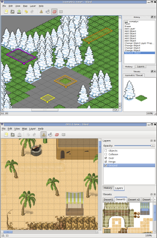
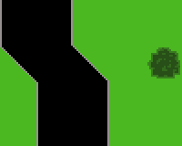
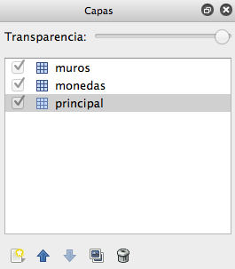
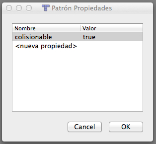
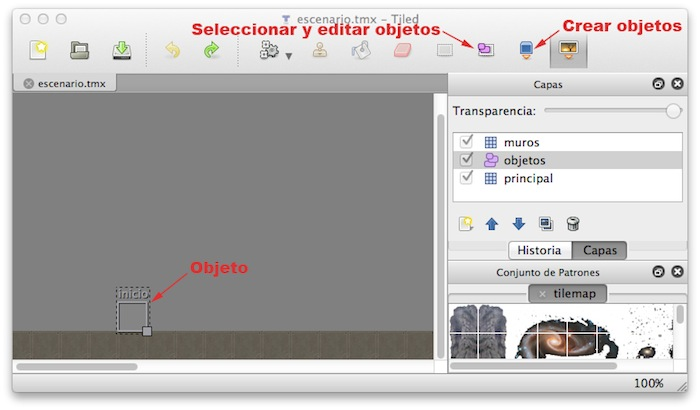
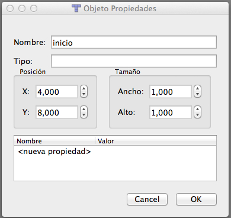

Escenario y fondo¶
Hasta el momento hemos visto cómo crear los diferentes elementos dinámicos (sprites) de nuestro juego, como por ejemplo nuestro personaje, los enemigos, o los disparos. Pero todos estos elementos normalmente se moverán sobre un escenario. Vamos a ver en esta sesión la forma en la que podemos construir este escenario, los fondos, y también cómo añadir música de fondo y efectos de sonido.
Escenario de tipo mosaico¶
En los juegos normalmente tendremos un fondo sobre el que se mueven los personajes. Muchas veces los escenarios del juego son muy extensos y no caben enteros en la pantalla. De esta forma lo que se hace es ver sólo la parte del escenario donde está nuestro personaje, y conforme nos movamos se irá desplazando esta zona visible para enfocar en todo momento el lugar donde está nuestro personaje. Esto es lo que se conoce como scroll. El tener un fondo con scroll será más costoso computacionalmente, ya que siempre que nos desplacemos se deberá redibujar toda la pantalla, debido a que se está moviendo todo el fondo. Además para poder dibujar este fondo deberemos tener una imagen con el dibujo del fondo para poder volcarlo en pantalla. Si tenemos un escenario extenso, sería totalmente prohibitivo hacer una imagen que contenga todo el fondo. Esta imagen sobrepasaría con total seguridad el tamaño máximo de las texturas OpenGL. Para evitar este problema lo que haremos normalmente en este tipo de juegos es construir el fondo como un mosaico. Nos crearemos una imagen con los elementos básicos que vamos a necesitar para nuestro fondo, y construiremos el fondo como un mosaico en el que se utilizan estos elementos.

Encontramos herramientas que nos permiten hacer esto de forma sencilla, como Tiled (http://www.mapeditor.org). Con esta herramienta deberemos proporcionar una textura con las distintas piezas con las que construiremos el mosaico, y podemos combinar estas piezas de forma visual para construir mapas extensos.

Deberemos proporcionar una imagen con un conjunto de patrones (Mapa > Nuevo conjunto de patrones). Deberemos indicar el ancho y alto de cada "pieza" (tile), para que así sea capaz de particionar la imagen y obtener de ella los diferentes patrones con los que construir el mapa. Una vez cargados estos patrones, podremos seleccionar cualquiera de ellos y asignarlo a las diferentes celdas del mapa.

El resultado se guardará en un fichero de tipo .tmx, basado en XML, que la
mayor parte de motores 2D son capaces de leer. En Cocos2D tenemos la clase CCTMXTiledMap,
que puede inicializarse a partir del fichero .tmx:
1 | TMXTiledMap *fondo = TMXTiledMap::create("mapa.tmx"); |
Este objeto es un nodo (hereda de Node), por lo que podemos añadirlo a pantalla
(con addChild) y aplicar cualquier transformación de las vistas anterioremente.
Las dimesiones del mapa serán (columnasancho)x(filasalto), siendo ancho x alto las dimensiones de cada tile, y columnas x filas el número de celdas que tiene el mapa.

Hemos visto la creación básica de un escenario con Tiled Map Editor, pero esta herramienta nos da más facilidades para la creación de los fondos. En el caso anterior hemos visto como crear el fondo a partir de una única capa de mosaico, pero podemos hacer que nuestros fondos se compongan de varias capas. En el panel de la derecha de la herramienta vemos la lista de capas, y podemos añadir nuevas capas. Al añadir una nueva capa, nos preguntará si queremos una nueva capa de patrones o de objetos. Las capas de patrones nos permitirán crear el aspecto visual del fondo mediante un mosaico, como hemos visto anteriormente, mientras que las de objetos nos permiten marcar diferentes zonas del mapa, por ejemplo para indicar puntos en los que aparecen enemigos, o el punto en el que se debe situar nuestro personaje al comenzar el nivel. Vamos a ver cada uno de estos tipos de capas con más detenimiento.
Capas de patrones¶
Como hemos indicado anteriormente, las capas de patrones nos permiten definir el aspecto del nivel mediante un mosaico, utilizando un conjunto de patrones para fijar el contenido de cada celda del mosaico. Cuando creamos varias capas de patrones, será importante fijar su orden, ya que las capas que estén al frente taparán a las que estén atrás. Este orden viene determinado por el orden en el que las capas aparecen en la lista del panel derecho. Las capas al comienzo de la lista quedarán por delante de las demás. Podemos cambiar el orden de las capas en esta lista mediante los botones con las flechas hacia arriba y hacia abajo para conseguir situar cada una de ellas en la profundidad adecuada.

Las utilidades de esta división en capas son varias:
- Aspecto: Un primer motivo para utilizar diferentes capas puede ser simplemente por cuestiones de aspecto, para combinar varios elementos en una misma celda. Por ejemplo, en una capa de fondo podríamos poner el cielo, y en una capa más cercana una reja con fondo transparente. De esa forma ese mismo recuadro con la reja podría ser utilizado en otra parte del escenario con un fondo distinto (por ejemplo de montañas), pudiendo así con únicamente 3 recuadros obtener 4 configuraciones diferentes: cielo, montaña, cielo con reja, y montaña con reja.
- Colisiones: Puede interesarnos que los elementos de una capa nos sirvan para detectar colisiones con los objetos del juego. Por ejemplo, podemos en ella definir muros que los personajes del juego no podrán atravesar. Consideraremos desde nuestro juego que todas las celdas definidas en esa capa suponen regiones que deben colisionar con nuestros sprites.
- Consumibles: Podemos definir una capa con objetos que podamos recoger. Por ejemplo podríamos definir una capa con monedas, de forma que cada vez que el usuario entra en una celda con una moneda dicha moneda sea eliminada del mapa y se nos añada a un contador de puntuación.
Vamos a ver ahora cómo implementar en nuestro juego los anteriores usos, que nos permitan detectar colisiones con las celdas y modificar en el programa el contenido de las mismas para poder introducir en ellas elementos consumibles.
La base para hacer todo esto es poder obtener cada capa individual del mapa para poder trabajar con
sus elementos. Esto lo haremos con la clase CCTMXLayer:
1 | TMXLayer *capa = fondo->layerNamed("muros"); |
Colisiones con el mapa¶
La detección de colisiones con los muros del fondo será muy útil en juegos de tipo RPG o de plataformas. Para hacer esto lo primero que debemos hacer es obtener la capa que define los elementos que se comportan como "muro" tal como hemos visto anteriormente. De esta capa necesitaremos tener alguna forma de identificar qué celdas definen muros. La forma más adecuada de marcar estas celdas consiste en darles una serie de propiedades que nuestro programa podrá leer y así comprobar si se trata de un muro con el que podemos colisionar o no. Para asignar propiedades a un objeto del conjunto de patrones dentro de Tiled podemos pulsar con el botón derecho sobre él, y seleccionar Propiedades del Patrón.... Se abrirá un cuadro como el siguiente donde podremos definir dichas propiedades:

Lo que deberemos hacer es marcar todos los objetos del conjunto de patrones que sirvan para definir muros con una misma propiedad que los marque como tal.
En el código de nuestro juego podremos leer estas propiedades de la siguiente forma:
1 2 3 4 5 6 7 8 9 10 11 12 | Point tileCoords = Point(fila,columna); int tileGid = capa->getTileGIDAt(tileCoords); if (tileGid) { auto properties = fondo->getPropertiesForGID(tileGid); if (!properties.isNull()) { bool collision = properties.asValueMap().at("colisionable").asBool(); if(collision) { ... } } } |
El gid de cada celda nos indica el tipo de objeto de patrón que tenemos en ella. Si la celda está
vacía el gid será 0. En una versión más sencilla, podríamos considerar que todas
las celdas de la capa son colisionables y simplemente comprobar si el gid es distinto de 0.
De todas formas, el uso de propiedades hace más flexible nuestro motor del juego, para por ejemplo
en el futuro implementar distintos tipos de colisiones.
Para comprobar las colisiones de nuestro sprite con los muros una primera aproximación podría consistir en hacer la comprobación con todas las celdas de la capa. Sin embargo esto no resulta nada eficiente ni adecuado. La solución que se suele utilizar habitualmente consiste en comprobar la colisión únicamente con las celdas de nuestro entorno. Haremos lo siguiente:
- Obtendremos la posición en las que está centrado nuestro sprite.
- Calcularemos las coordenadas de la celda a la que corresponde (dividiendo entre la anchura y altura de cada celda).
- Obtendremos los gid de las 9 celdas adyacentes.
- Comprobaremos si colisiona con alguna de ellas, corrigiendo la posición del sprite en tal caso.
A continuación mostramos un ejemplo de código en el que obtendríamos cada una de las celdas adyacentes a un sprite. En primer lugar vamos a crear una serie de métodos auxiliares. El primero de ellos nos devolverá las coordenadas de una celda a partir de las coordenadas de la escena (dividiendo entre el tamaño de cada celda):
1 2 3 4 5 6 7 8 9 | Point Game::tileCoordForPosition(Point position) { Size tileSize = _tiledMap->getTileSize(); float totalHeight = _tiledMap->getMapSize().height * tileSize.height; float x = floor(position.x / tileSize.width); float y = floor((totalHeight - position.y) / tileSize.height); return Point(x, y); } |
Hay que destacar que las coordenadas y del mapa están invertidas respecto a las de la escena. Por ese motivo es necesario calcular la altura total y hacer la resta.
También vamos a definir un método que nos devuelva el área (Rect) que ocupa en la escena
una celda dada:
1 2 3 4 5 6 7 8 9 | Rect Game::rectForTileAt(CCPoint tileCoords) { Size tileSize = _tiledMap->getTileSize(); float totalHeight = _tiledMap->getMapSize().height * tileSize.height; Point origin(tileCoords.x * tileSize.width, totalHeight - ((tileCoords.y + 1) * tileSize.height)); return Rect(origin.x, origin.y, tileSize.width, tileSize.height); } |
Por último, crearemos un método que nos diga si una determinada celda es colisionable o no. Consideraremos que las celdas fuera del mapa no son colisionables (aunque según el caso podría interesarnos hacerlo al revés):
1 2 3 4 5 6 7 8 9 10 11 12 13 14 15 16 17 18 19 20 21 22 | bool Game::isCollidableTileAt(Point tileCoords) { // Consideramos que celdas fuera del mapa no son nunca colisionables if(tileCoords.x < 0 || tileCoords.x >= _tiledMap->getMapSize().width || tileCoords.y < 0 || tileCoords.y >= _tiledMap->getMapSize().height) { return false; } TMXLayer *layerMuros = _tiledMap->getLayer("muros"); int tileGid = layerMuros->getTileGIDAt(tileCoords); if (tileGid) { auto properties = _tiledMap->getPropertiesForGID(tileGid); if (!properties.isNull()) { bool collision = properties.asValueMap().at("colisionable").asBool(); return collision; } } return false; } |
Una vez hecho esto, podremos calcular las colisiones con las celdas adyacentes a nuestro personaje y tomar las acciones oportunas. Por ejemplo, en el caso sencillo en el que sólo necesitamos calcular las colisiones a la izquierda y a la derecha, podremos utilizar el siguiente código:
1 2 3 4 5 6 7 8 9 10 11 12 13 14 15 16 17 18 19 20 21 22 23 24 25 26 27 28 29 | Size tileSize = _tiledMap->getTileSize(); Point tileCoord = this->tileCoordForPosition(_spritePersonaje->getPosition()); Point tileLeft(tileCoord.x - 1, tileCoord.y); Point tileRight(tileCoord.x + 1, tileCoord.y); if(this->isCollidableTileAt(tileLeft)) { Rect tileRect = this->rectForTileAt(tileLeft); if(tileRect.intersectsRect(_spritePersonaje->getBoundingBox())) { this->detenerPersonaje(); _spritePersonaje->setPosition(Vec2(tileRect.origin.x + tileRect.size.width + _spritePersonaje->getContentSize().width / 2, tileSize.height + _spritePersonaje->getContentSize().height / 2)); } } if(this->isCollidableTileAt(tileRight)) { Rect tileRect = this->rectForTileAt(tileRight); if(tileRect.intersectsRect(_spritePersonaje->getBoundingBox())) { this->detenerPersonaje(); _spritePersonaje->setPosition(Vec2(tileRect.origin.x - _spritePersonaje->getContentSize().width / 2, tileSize.height + _spritePersonaje->getContentSize().height / 2)); } } |
Por supuesto, la forma de obtener estas celdas dependerá del tamaño del sprite. Si ocupase más de una celda deberemos hacer la comprobación con todas las celdas de nuestro entorno a las que pudiera alcanzar.
Una vez detectada la colisión, el último paso hemos visto que consistiría en parar el movimiento del sprite. Si conocemos la posición de la celda respecto al sprite (arriba, abajo, izquierda, derecha) nos será de gran ayuda, ya que sabremos que deberemos posicionarlo justo pegado a esa celda en el lateral que ha colisionado con ella. En el ejemplo anterior, según colisione con la celda izquierda o derecha, posicionamos al sprite pegado a la derecha o a la izquierda del muro respectivamente.
Modificación del mapa¶
En muchos casos nos interesará tener en el mapa objetos que podamos modificar. Por ejemplo, monedas u otros items que podamos recolectar, u objetos que podemos destruir. Para conseguir esto podemos definir una capa con dichos objetos, y marcarlos con una propiedad que nos indique que son "recolectables" o "destruibles". Una vez hecho esto, desde nuestro código podemos obtener la capa que contenga dichos objetos recolectables, por ejemplo "monedas":
1 | TMXLayer *monedas = fondo->getLayer("monedas"); |
De esta capa podremos eliminar los objetos "recolectables" cuando nuestro personaje los recoja. Para hacer esto podemos utilizar el siguiente método:
1 | monedas->removeTileAt(tileCoord); |
También podríamos cambiar el tipo de elemento que se muestra en una celda (por ejemplo para que al tocar una moneda cambie de color). Esto lo haremos especificando el nuevo gid que tendrá la celda:
1 | monedas->setTileGID(GID_MONEDA_ROJA,tileCoord); |
Para cambiar o modificar los elementos recolectables primero deberemos comprobar si nuestro personaje "colisiona" con la celda en la que se encuentran, de forma similar a lo visto en el punto anterior:
1 2 3 4 5 6 7 8 9 10 11 12 | Point tileCoords = this->tileCoordForPosition(_sprite->getPosition()); int tileGid = monedas->getTileGIDAt(tileCoords); if (tileGid) { auto properties = fondo->getPropertiesForGID(tileGid); if (!properties.isNull()) { bool recolectable = properties.asValueMap().at("recolectable").asBool(); if(recolectable) { monedas->removeTileAt(tileCoords); } } } |
En este caso únicamente comprobamos la celda en la que se encuentra nuestro personaje, no las adyacentes. Si el personaje fuese de mayor tamaño deberíamos comprobar todas las celdas del entorno que pudiera abarcar.
Capas de objetos¶
Hasta el momento hemos visto las capas de patrones, que se construyen como un mosaico de celdas que definirá el aspecto del fondo. Existe otro tipo de capa que podemos incluir en nuestro diseño del fondo que no se limita al mosaico de celdas, sino que nos permite marcar cualquier región del mapa sin ajustarse a la rejilla de celdas. Estas son las capas de objetos. En estas capas podremos por ejemplo marcar zonas de mapas donde aparecen enemigos, o donde se situa automáticamente nuestro personaje al iniciar el nivel.
Cuando añadamos y seleccionemos una capa de objetos, en la barra de herramientas superior se activarán dos iconos que nos permitirán crear nuevos objetos y seleccionar y cambiar las propiedades de los objetos existentes. Pulsando el botón con el "cubo azul" podremos añadir un nuevo objeto a la escena. El objeto se definirá como un rectángulo (deberemos pulsar y arrastrar el ratón sobre el escenario para definir dicho rectángulo).

Tras crear un objeto, podremos cambiar a la herramienta para la selección y modificación de objetos, seleccionar el objeto que acabamos de crear, pulsar sobre él con el botón derecho, y seleccionar la opción Propiedades del Objeto .... Veremos una ventana como la siguiente, en la que podremos darle un nombre, modificar sus dimensiones, y añadir una lista de propiedades.

Lectura de la capa de objetos
Una vez le hayamos dado un nombre al objeto, podremos obtenerlo desde el código de nuestro juego. Para ello
primero deberemos obtener la capa de objetos (representada con la clase TMXObjectGroup) a
partir del nombre que le hemos dado (objetos en este ejemplo):
1 | TMXObjectGroup *objects = fondo->getObjectGroup("objetos"); |
A partir de esta capa podremos obtener uno de sus objetos dando su nombre. Por ejemplo, si hemos creado
un objeto con nombre inicio, podremos obtenerlo de la siguiente forma:
1 | auto inicio = objects->getObject("inicio"); |
Como vemos, el objeto se obtiene como un diccionario. De él podemos obtener diferentes propiedades, como sus coordenadas:
1 2 3 4 | int x = inicio.at("x").asInt(); int y = inicio.at("y").asInt(); _sprite->setPosition(Vec2(x, y)); |
De esta forma en el código obtenemos la posición que ocupa el objeto y podemos utilizar esta posición para su propósito (por ejemplo para situar en ella inicialmente a nuestro personaje, o hacer que en ese punto aparezcan nuevos enemigos).
Formas geométricas
En la capa de objetos podemos incluir formas geométricas, como por ejemplo líneas o polilíneas. Esto puede ser especialmente útil para definir la geometría de colisión del escenario y posteriormente cargarla en el motor de físicas.
La capa de objetos geométricos se carga de forma similar a los objetos genéricos definidos por el usuario.
Por ejemplo, si nuestros objetos geométricos de la capa de objetos son todos ellos polilíneas, podemos cargarlos de la siguiente forma:
1 2 3 4 5 6 7 8 9 10 11 12 13 14 15 16 17 18 19 | TMXObjectGroup *groupEdges = _tiledMap->getTiledMap()->getObjectGroup("MyEdges"); ValueVector edges = groupsEdges->getObjects(); for(Value edge : edges) { ValueVector polyline = edge.asValueMap().at("polylinePoints").asValueVector(); // Calculamos la coordenadas absolutas del objeto float x = edge.asValueMap().at("x").asFloat() + _tiledMap->getTiledMap()->getPositionX(); float y = edge.asValueMap().at("y").asFloat() + _tiledMap->getTiledMap()->getPositionY(); for(Value point: polyline) { float px = point.asValueMap().at("x").asFloat() + x; float py = point.asValueMap().at("y").asFloat() + y; // Hacemos algo con (px, py) ... } } |
Si no conocemos cómo está organizada la capa de objetos, podemos consultar el fuente XML del fichero
.tmx. También tenemos la opción de imprimir en la consola el objeto que nos devuelvegetObjects, y de esta forma veremos su estructura en JSON y podremos así escribir el código para leerlo.
Scroll del escenario¶
Cuando en el juego tenemos un mapa más extenso que el tamaño de la pantalla, tendremos que implementar scroll para movernos por él. Para hacer scroll podemos desplazar la capa principal del juego, que contiene tanto el mapa de fondo como los sprites:
1 | this->setPosition(Vec2(scrollX, scrollY)); |
En este ejemplo anterior, this sería nuestra capa principal. En este
caso es importante resaltar que si queremos implementar un HUD (para mostrar puntuaciones, número de vidas,
etc) la capa del HUD no debe añadirse como hija de la capa principal, sino que deberemos añadirla
directamente como hija de la escena (Scene), ya que de no ser así el HUD se movería con el
scroll.
Normalmente el scroll deberá seguir la posición de nuestro personaje. Conforme movamos nuestro personaje deberemos centrar el mapa:
1 2 3 4 5 6 7 8 | void Game::centerViewport() { Size screenSize = Director::getInstance()->getWinSize(); float x = screenSize.width/2.0 - _sprite->getPosition().x; float y = screenSize.height/2.0 - _sprite->getPosition().y; this->setPosition(Vec2(x, y)); } |
El método anterior deberá invocarse cada vez que se cambie la posición del sprite. Lo que hará
es desplazar todo el escenario del juego de forma que el sprite quede situado justo en el centro
de la pantalla. Podemos observar que se obtiene el tamaño de la pantalla a partir de Director,
y calculamos el desplazamiento (x,y) necesario para que el sprite quede situado justo
en el punto central.
Límites del escenario¶
El problema de la implementación anterior es que el escenario no es infinito, y cuando lleguemos a sus
límites normalmente querremos no salirnos de ellos para no dejar en la pantalla espacio vacío. Deberemos
por lo tanto detener el scroll del fondo cuando hayamos llegado a su límite. Esto podemos resolverlo
añadiendo algunos if al código anterior:
1 2 3 4 5 6 7 8 9 10 11 12 13 14 15 16 17 18 19 20 21 22 23 24 25 26 27 | void Game::centerViewport() { Size screenSize = Director::getInstance()->getWinSize(); Size tileSize = _tiledMap->getTileSize(); float offsetX = screenSize.width / 2.0 - _sprite->getPosition().x; float offsetY = screenSize.height / 2.0 - _sprite->getPosition().y; // Comprueba límites en la dimension x if(offsetX > 0) { offsetX = 0; } else if(offsetX < screenSize.width - tileSize.width * _tiledMap->getMapSize().width) { offsetX = screenSize.width - tileSize.width * _tiledMap->getMapSize().width; } // Comprueba límites en la dimension y if(offsetY > 0) { offsetY = 0; } else if(offsetY < screenSize.height - tileSize.height * _tiledMap->getMapSize().height) { offsetY = screenSize.height - tileSize.height * _tiledMap->getMapSize().height; } this->setPosition(Vec2(offsetX, offsetY)); } |
Con este código evitaremos que en el visor veamos zonas fuera de los límites del mapa. La posición
mínima que se mostrará será 0, y la máxima el tamaño del mapa (se calcula como el número
de celdas mapSize por el tamaño de cada celda tileSize).
Cuando lleguemos a estos límites nuestro personaje seguirá moviéndose, pero ya no estará centrado en la pantalla, el mapa permanecerá fijo y el personaje se moverá sobre él.
Scroll parallax¶
En juegos 2D podemos crear una ilusión de profundidad creando varias capas de fondo y haciendo que las capas más lejanas se muevan a velocidad más lenta que las más cercanas al hacer scroll. Esto es lo que se conoce como scroll parallax.
En Cocos2D es sencillo implementar este tipo de scroll, ya que contamos con el tipo de nodo
ParallaxNode que define este comportamiento. Este nodo nos permite añadir varios hijos, y
hacer que cada uno de ellos se desplace a una velocidad distinta.
1 2 3 4 5 6 7 | ParallaxNode *parallax = ParallaxNode::create(); parallax->addChild(scene, 3, Vec2(1,1), Vec2(0,0)); parallax->addChild(mountains, 2, Vec2(0.25,1), Vec2(0,0)); parallax->addChild(sky, 1, Vec2(0.01,1), Vec2(0,0)); this->addChild(parallax, -1); |
Podemos añadir cualquier nodo como capa al scroll parallax, como por ejemplo sprites
o tilemaps. Con parallax ratio especificamos la velocidad a la que se mueve la capa. Si
ponemos un ratio de 1 hacemos que se mueva a la velocidad real que estemos moviendo la capa
principal de nuestra escena. Si ponemos 0.5, se moverá a mitad de la velocidad.
Reproducción de audio¶
En un videojuego normalmente reproduciremos una música de fondo, normalmente de forma cíclica, y una serie de efectos de sonido (disparos, explosiones, etc). En Cocos2D tenemos la librería CocosDenshion que nos permite reproducir este tipo de audio de forma apropiada para videojuegos.
La forma más sencilla de utilizar esta librería es mediante el objeto singleton
SimpleAudioEngine. Podemos acceder a él de la siguiente forma:
1 2 3 4 5 6 | #include "SimpleAudioEngine.h" ... SimpleAudioEngine *audio = CocosDenshion::SimpleAudioEngine::getInstance(); |
Música de fondo¶
Podemos reproducir como música de fondo cualquier formato soportado por el dispositivo (MP3, M4A, etc).
Para ello utilizaremos el método playBackgroundMusic del objeto audio engine:
1 | audio->playBackgroundMusic("musica.m4a", true); |
Lo habitual será reproducir la música en bucle, por ejemplo mientras estamos en un menú o en un nivel del juego. Por ese motivo contamos con el segundo parámetro (loop) que nos permite utilizar de forma sencilla esta característica.
Podemos deterner la reproducción de la música de fondo en cualquier momento con:
1 | audio->stopBackgroundMusic(); |
También podemos a través de este objeto cambiar el volumen de la música de fondo (se debe
espeficiar un valor de 0 a 1):
1 | audio->setBackgroundMusicVolume(0.9); |
Efectos de sonido¶
Los efectos de sonido sonarán cuando suceda un determinado evento (disparo, explosión, pulsación de un botón), y será normalmente una reproducción de corta duración. Una característica de estos efectos es que deben sonar de forma inmediata al suceder el evento que los produce. Causaría un mal efecto que un disparo sonase con un retardo respecto al momento en el que se produjo. Sin embargo, la reproducción de audio normalmente suele causar un retardo, ya que implica cargar las muestras del audio del fichero y preparar los bufferes de memoria necesarios para su reproducción. Por ello, en un videojuego es importante que todos estos efectos se encuentren de antemano preparados para su reproducción, para evitar estos retardos.
Con Cocos2D podremos precargar un fichero de audio de la siguiente forma:
1 2 | audio->preloadEffect("explosion.caf"); audio->preloadEffect("disparo.caf"); |
Esto deberemos hacerlo una única vez antes de comenzar el juego (un buen lugar puede ser el método
init de nuestra capa del juego). Una vez cargados, podremos reproducirlos de forma inmediata
con playEffect:
1 | audio->playEffect("explosion.caf"); |
Una vez no vayamos a utilizar estos efectos de sonido, deberemos liberarlos de memoria:
1 2 | audio->unloadEffect("explosion.caf"); audio->unloadEffect("disparo.caf"); |
Esto se puede hacer cuando vayamos a pasar a otra escena en la que no se vayan a necesitar estos efectos.
Por último, al igual que en el caso de la música de fondo, podremos cambiar el volumen de los efectos de sonido con:
1 | audio->setEffectsVolume(0.6); |
De esta forma podremos tener dos niveles de volumen independientes para la música de fondo y para los efectos de sonido. Los videojuegos normalmente nos presentan en sus opciones la posibilidad de que el usuario ajuste cada uno de estos dos volúmenes según sus preferencias.